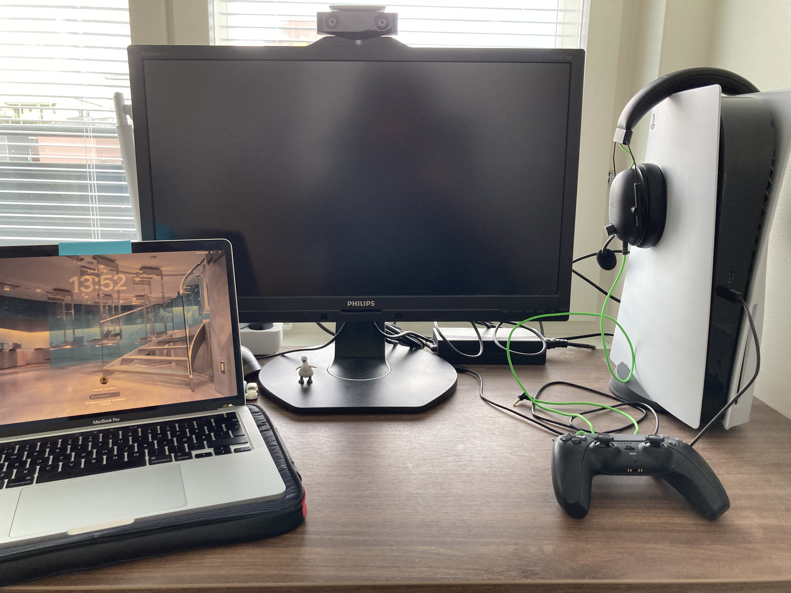

Vem jag är
Hej och välkommen till min hemsida! Jag heter Gabriel och är en 23 år gammal kille från Stockholm. Jag bodde större delen av mitt liv i Hägersten, men är numera bosatt i Märsta nära Arlanda. Under min uppväxt har jag alltid haft ett större intresse för teknik, både hårdvara och mjukvara. Under gymnasietiden så pluggade jag speldesign där jag fick lära mig mycket såsom: programmering, webbutveckling, ljud- och musikskapande, 3D-modellering och annat kul. Jag har drömt att jobba med allt ifrån polis till jurist eller läkare, men valde till slut att satsa på något mer tekniskt och här är jag idag!

Intressen
Jag gillar att träna regelbundet, mestadels styrketräning som jag gör hemma i mitt hemmagym. Utöver det så gillar jag oftast gå ut och promenera längre sträckor, helst ute i natur eller mindre befolkade områden där man kan se mer flora och fauna. När jag är hemma så gillar jag att spela tv-spel och det blir oftast single-player spel. Annars gillar jag att läsa böcker och spela kort.